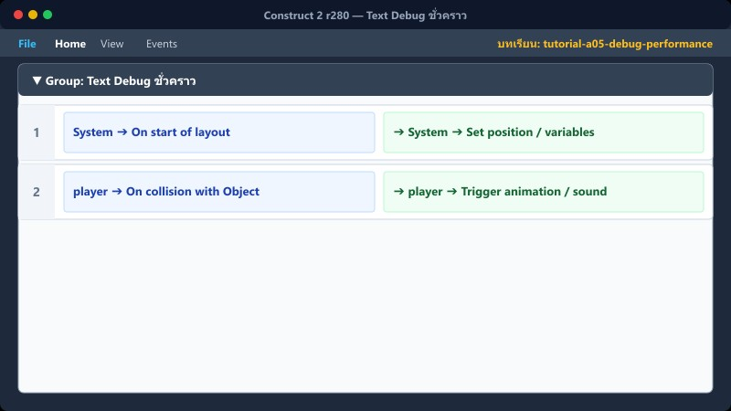
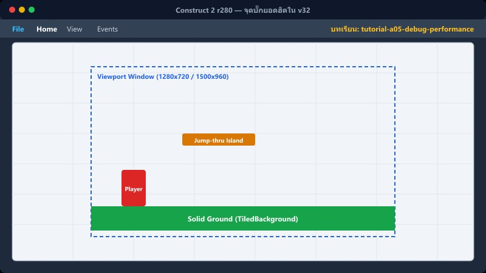
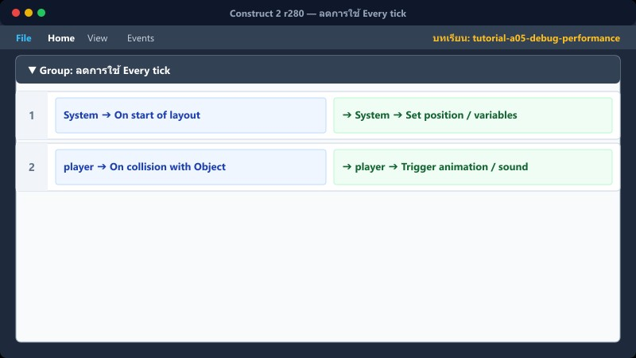
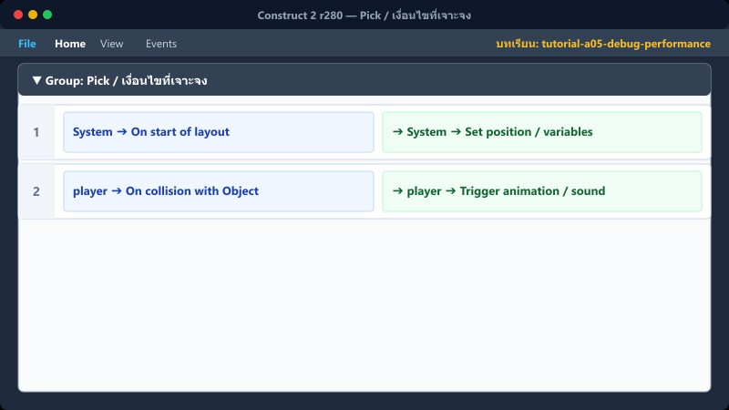
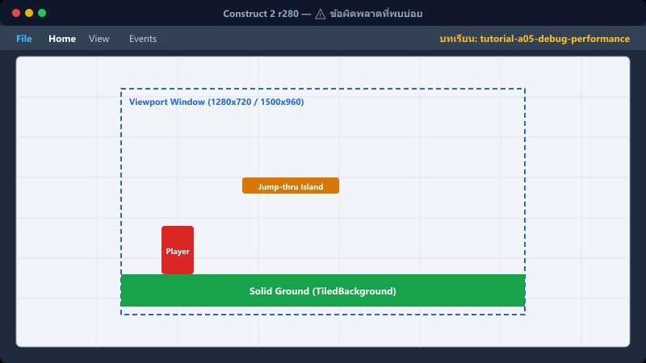

สังเกตปัญหา→สร้าง Text Debug เพื่อดูค่าตัวแปร→ตรวจสอบ Event Sheet→ปรับแก้และลบ Debug ก่อนปล่อยเกม
1Text Debug ชั่วคราว


สร้าง Text object บน HUD Layer เพื่อแสดงค่าตัวแปรสถานะต่างๆ ที่เรามองไม่เห็นด้วยตาเปล่าในระหว่างการรันเกม อย่าลืมลบออกก่อน export release!
📍 ที่ไหนใน C2: Layer HUD → Insert new object → Text
System: Every tick
DebugText: Set text to "ข้อ:" & ข้อปัจจุบัน & " | ล็อก:" & ล็อกคำตอบ & " | จบ:" & กำลังจบด่าน & " | Layout:" & LayoutName
ให้ตรวจสอบบ่อยๆ ว่าค่าเปลี่ยนตรงตามเงื่อนไขที่ตั้งไว้หรือไม่
2จุดบั๊กยอดฮิตใน v32


ปัญหาที่พบบ่อยมากที่สุดใน Construct 2:
- Object วางผิด Layer: มอนสเตอร์อยู่บน HUD ทำให้ผู้เล่นเดินทะลุไม่ชน
- UID ซ้ำ: จากการ copy Layout หรือ object ผิดวิธี
- ชื่อ Animation ผิด: พิมพ์ walk แต่ตั้งค่าไว้ Walk (ไม่ error แจ้งเตือนแต่ไม่ทำงาน)
- ลืม Trigger once: โดนชนทีเดียวหัวใจลดรัวๆ
- ลืม Invert Is flashing: โดนตีซ้ำตอนอยู่ในสถานะอมตะ
- คำตอบปลดล็อกก่อนที่ศัตรู/เกาะจะ spawn เสร็จ
📍 ที่ไหนใน C2: ดูแถบ Layout ทางขวา → ตรวจ Layer ของแต่ละ object
3ลดการใช้ Every tick

Event ที่ไม่จำเป็นต้องรันเช็คทุกเฟรม (60 ครั้งต่อวินาที) ให้เปลี่ยนไปใช้ Event-driven แทน เช่น On collision, หรือ On variable changed จะช่วยลดการกินทรัพยากรเครื่องได้มาก
📍 ที่ไหนใน C2: Event sheet → ดูจำนวน Events ที่ไม่มี Condition (มีแต่รูปเฟือง) → ย้ายเข้า Group
- สิ่งที่ใช้ Every tick ได้: หัวใจบน HUD หรือการเช็คตำแหน่งคร่าวๆ ของกล้อง (ประมวลผลเร็วและเบา)
- สิ่งที่ไม่ควรใช้ Every tick: การคำนวณตำแหน่งเกาะลอยทั้ง 10 ช่องตลอดเวลา ควรจัด Group แล้วเปิด Action เฉพาะตอนที่กำลังเตรียมคำตอบเท่านั้น และปิดเมื่อเสร็จสิ้น
4Pick / เงื่อนไขที่เจาะจง

เวลาต้องการทำลาย (Destroy) หรือแก้ค่า object เช่น answer_orb ต้อง Pick ให้ถูกตัว! (ใช้ UID หรือ instance variable อย่าง `ช่องคำตอบ` เพื่อกรอง)
ถ้าไม่ Pick ให้ชัดเจน Construct 2 จะทำการเหมาทำลาย object ชนิดนั้น ทั้งหมดในฉาก (เช่น หายไปทั้ง 10 ดวง) การตั้งค่า Text ให้แต่ละ slot ก็ต้อง Pick Text ที่ตรงกับ slot นั้นเช่นกัน
📍 ที่ไหนใน C2: Event → เพิ่ม Condition เพื่อ Pick object ที่ต้องการ เช่น System: Compare instance variable
5⚠️ ข้อผิดพลาดที่พบบ่อย

1. Debug text ลืมลบ: ก่อนทำการ Export เกมให้เด็กเล่น ลืมลบ Debug text ออก ทำให้เด็กเห็นค่าตัวแปรลับบนหน้าจอ
2. Group ปิดแล้วลืมเปิด: ปิด Group เพื่อหยุดการทำงานชั่วคราว แต่ลืมเปิดกลับเมื่อเข้าด่านใหม่ ทำให้เกมหยุดทำงาน
3. ไม่ได้เช็ค Performance: Profile ใน C2 ดูได้ที่ Preview → About this → Performance ตรวจสอบ Memory และ CPU เสมอ